Overview
This is the system I'm proudest of. It moves every change from a busy MySQL system into ClickHouse within seconds, and it's built so a failure stops the pipeline instead of skipping data.
Kafka Manager, the control plane
This is the control room I built for our real-time CDC pipeline. It's a FastAPI backend with a plain JS front end, and the team uses it every day to run the pipeline, debug it and check its health across dev, staging and production.


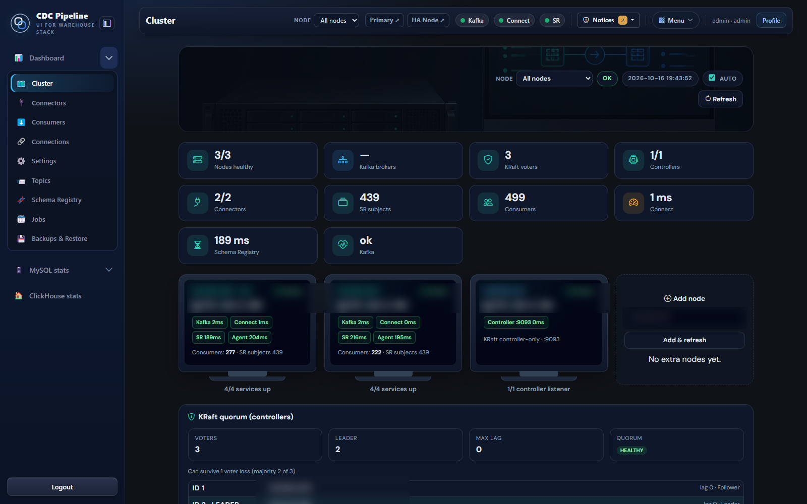

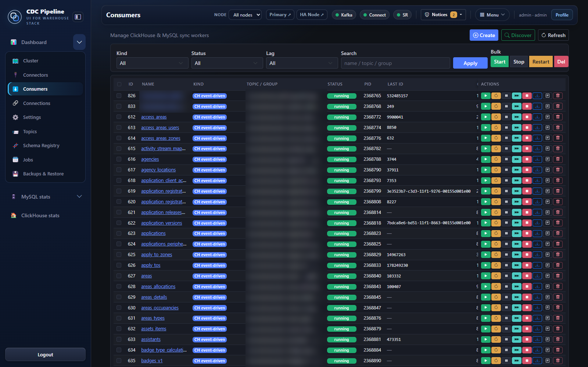

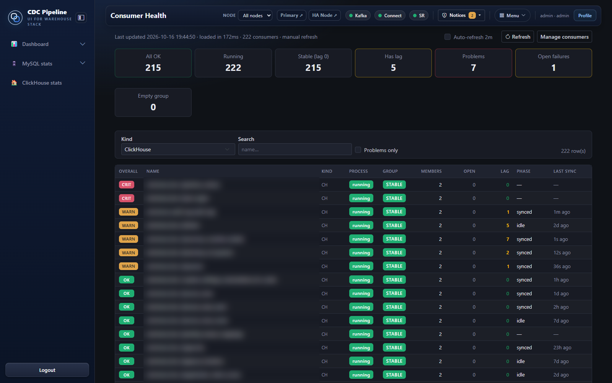

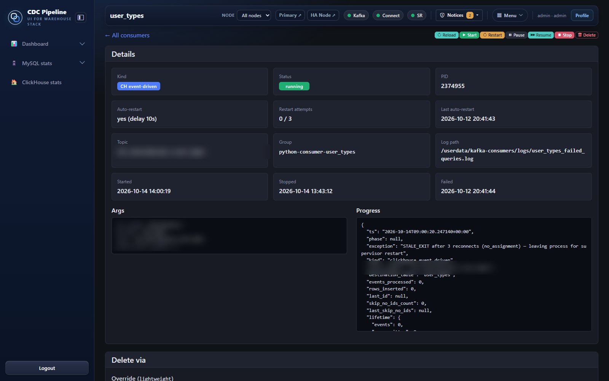

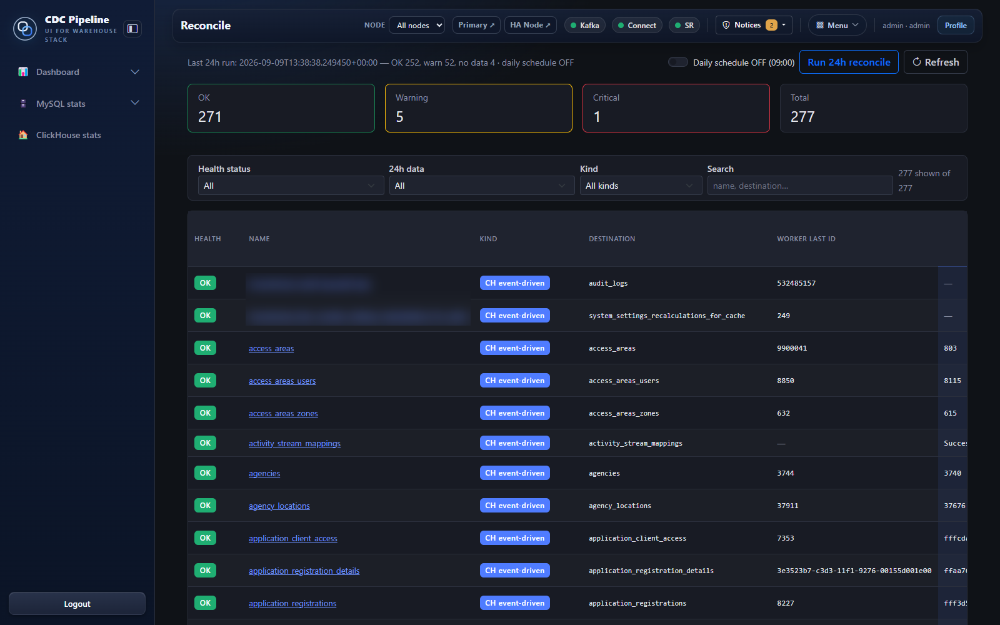

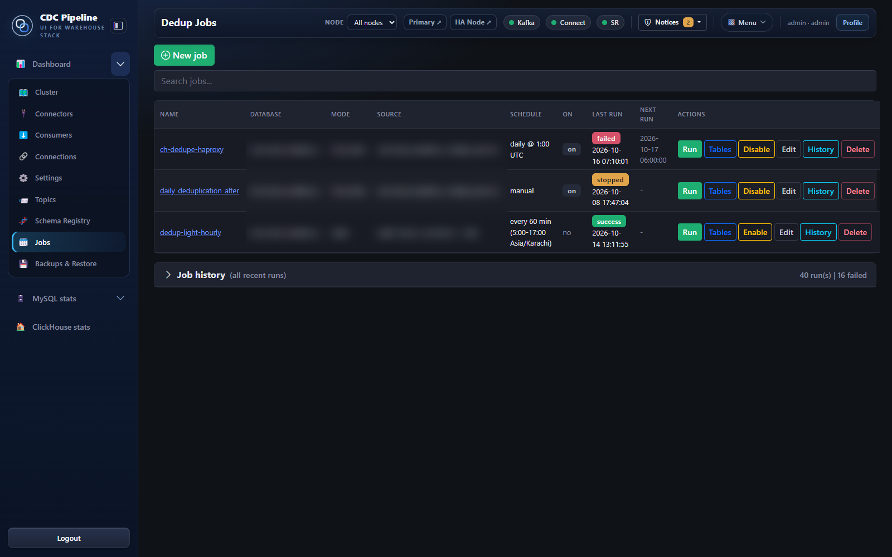

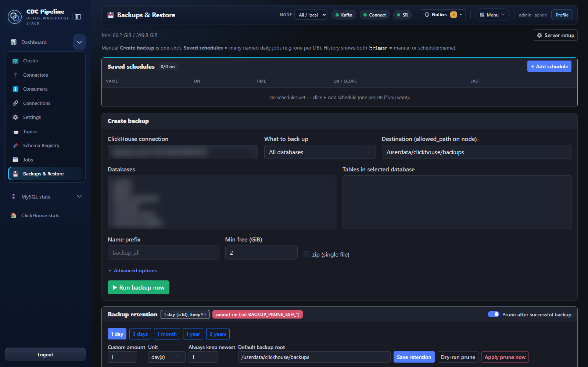
- ConsumersStart, stop and recycle, with live status. Recycling goes in batches with hold times so we never restart everything at once.
- TraceScans every partition of a topic for a key or record id.
- BackupsTopic backups with retention presets.
- DedupJobs use ClickHouse lightweight deletes instead of mutations.
- StatsPer-minute insert/update/delete rollups per table from my own binlog reader, plus lag, binlog headroom, baseline vs now, the hottest table and top 5/10/20 charts.
- Safe by defaultBulk dedup and backfill are off by default and never switch themselves on.
Context
The analytics team needed live data from a busy transactional MySQL system: customer, CRM and transactional tables, more than 200 of them. Querying MySQL directly wasn't an option, and the older replication had a worse problem. Records went missing and nobody could say why. I was asked to redesign it so analytics could trust the numbers, across Local/dev, staging and production.
Throughput
Around 11k changed rows a minute sustained, peaks above 28k. About 80% updates and 20% inserts, over 200+ tables.
Zero loss
No skipped events, ever. If something is wrong, the pipeline stops loudly and doesn't move on.
High availability
Lose a broker, a Connect worker or a consumer and replication keeps going. Restarts can't take everything down at once.
Architecture
Debezium reads the MySQL binlog and runs as connectors on a Kafka Connect cluster. Events go as Avro into a 3-node Kafka cluster in KRaft mode. Python consumers, one per table or table group, write them into versioned ClickHouse tables. Next to the data path, a binlog reader of my own builds exact per-minute DML stats. Kafka Manager is the control plane over all of it, and Nagios watches it.

High availability and failover
KRaft takes ZooKeeper out of the picture. All three nodes run as controller and broker, so the quorum survives losing one. Topics are replicated across nodes and producers only count a write once the in-sync replicas have it, so a failed leader hands over to a follower that's up to date. Connect runs distributed: if a worker dies, its Debezium tasks rebalance to the others and resume from the stored binlog position. Consumers fail over through their group and pick up from the last committed offset. Because of how commits work (below), that's always a batch ClickHouse already confirmed.
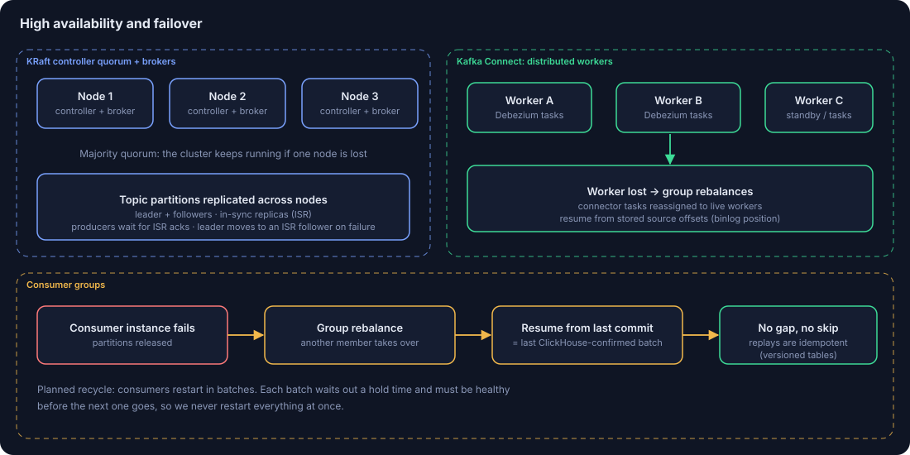
Delivery guarantee
This is the part that fixed the missing records. A consumer polls a batch, writes it to ClickHouse, waits for the confirmation, and only then commits the offset. If the write fails, the consumer stops with the offset untouched. Empty batches never get committed as success, and new groups start from earliest. On restart a batch may be written twice. The versioned tables are built to absorb that, so duplicates are harmless and gaps can't happen.
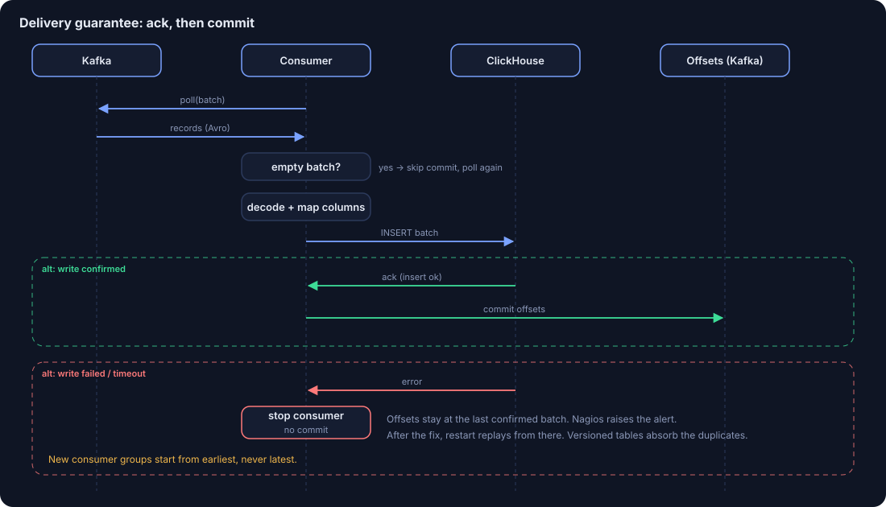
Deployment and promotion
Every release is a Git tag. The same tag goes Local → staging → prod. Before prod there's a mandatory dry run against production and a manual sign-off. Runtime flags that differ per environment live on the hosts and are excluded from deploys, so a release can't flip a prod setting by accident.
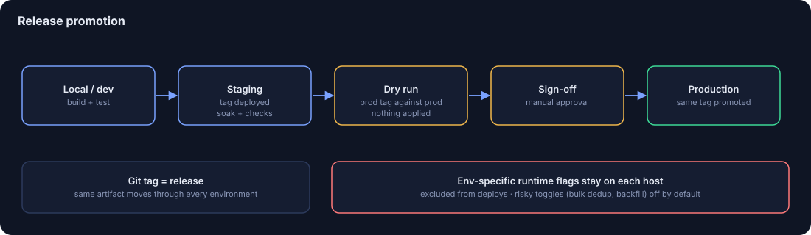
Observability
Lag
Consumer lag per group, visible in Kafka Manager and alerted in Nagios.
Binlog headroom
How much binlog is left before MySQL purges it. This is the window we have to recover a stopped connector.
Per-table DML
Exact insert/update/delete counts per table per minute, read from the binlog in order with checkpoints. Baseline vs now, hottest table, top 5/10/20.
Design decisions and trade-offs
| Decision | Why | Trade-off I accepted |
|---|---|---|
| Commit only after ClickHouse confirms | Closes the commit-before-ack gap | Possible re-writes after a crash, absorbed by versioned tables |
| Failed batch stops the consumer | Bad data or outages surface right away | That table pauses until someone looks. Lag alerts cover it. |
| New groups start from earliest | A reset can never skip history | Slower first catch-up |
| ReplacingMergeTree-style versioned tables | Fits an update-heavy (~80%) stream and makes replays safe | Latest version is resolved at merge/query time |
| Dedup with lightweight deletes | Much lighter than mutations on a live warehouse | Runs as a separate, opt-in job |
| DML stats from the binlog, not sampling | Exact and resumable numbers | One more reader process to run |
| Batch-wise recycling with hold times | Never restart all consumers at once | Rolling restarts take longer |
| Bounded id-gap audit (~20k-id buckets) | Safe to run on production MySQL | A full audit takes time, by design |
| Risky toggles off by default | Bulk dedup or backfill never start by themselves | Someone has to turn them on deliberately |
Failure modes
| What breaks | What happens |
|---|---|
| Kafka broker down | KRaft quorum holds with two nodes, partition leadership moves to in-sync replicas |
| Connect worker down | Debezium tasks rebalance to other workers and resume from the stored binlog position |
| Consumer crashes | Group rebalances; work resumes from the last ClickHouse-confirmed offset |
| ClickHouse write fails | Consumer stops, offset isn't committed, Nagios alerts |
| New column in MySQL | Added to ClickHouse automatically, ingestion keeps running |
| Connector stalled | Binlog headroom shows how long we have before data would age out |
| Suspected missing rows | The id-gap audit finds the exact ids and which consumer owns them |
Results
Results
- Found and fixed the root causes of historical missing records: commit-before-ack, latest-offset resets and empty-batch commits.
- Post-fix audit across 217 tables: no missing ids in almost every table. The few gaps left trace back to specific consumers, not random loss.
- 200+ tables and 220+ consumers replicating in real time at ~11k rows/min, peaks above 28k.
- Per-table load visible in real time, so triage starts with facts.
- HA Kafka with failover, and repeatable, gated deploys across three environments.
ClickHouse data warehouse
ClickHouse is where all this lands and where people query it. Kafka topics come in layers: raw CDC events from Debezium, processed analytics topics where Python consumers normalize, validate and enrich, and BI streaming topics for dashboards. Records also go out through APIs, webhooks, SFTP/FTP and Kafka sinks where a downstream system needs them.
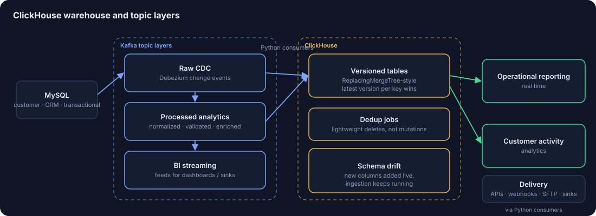
Versioned tables
ReplacingMergeTree-style. Every change is an insert with a version, and the latest per key wins. That suits an update-heavy stream and makes replays safe.
Dedup and drift
Dedup jobs use lightweight deletes, not mutations. New source columns are added automatically while ingestion keeps running.
What it serves
Real-time operational reporting and customer activity analytics, straight off live data.
Data warehousing and data marts
I've built warehouses on most of the major stacks. Here's the short version.
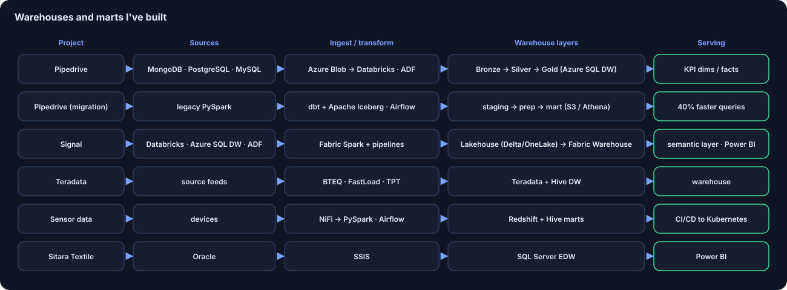
Pipedrive · Azure + dbt/Iceberg
ETL from MongoDB, PostgreSQL and MySQL into Azure Blob, transforms in Databricks orchestrated by ADF, Bronze/Silver/Gold on Azure SQL DW, and Gold dims and facts for KPI dashboards. Then I led the move off legacy PySpark to dbt on Apache Iceberg (S3/Athena, Airflow) with staging/prep/mart layers. Queries got 40% faster.
Signal · Microsoft Fabric
Moved off Databricks, Azure SQL DW and ADF. Fabric Spark notebooks and pipelines, Lakehouse on Delta/OneLake, Silver/Gold into Fabric Warehouse, and a semantic layer for Power BI.
Teradata + Hive
Warehouse loads with BTEQ, FastLoad and TPT, monitoring in Viewpoint, Informatica automated with shell scripts.
Sensor data marts
NiFi ingestion, PySpark and Airflow into Redshift and Hive marts, shipped through CI/CD to Kubernetes.
Sitara Textile EDW
SQL Server enterprise warehouse, SSIS loads from Oracle, Power BI on top.
Want to talk about something similar? daneshrana45@gmail.com